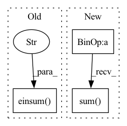

Pattern ID :2607
Before Change
if not logits_normalized:
logits = nn.log_softmax(logits)
loss = -jnp.einsum("...k,...k->..." , one_hot_targets, logits)
if weights is not None:
loss = apply_weights(loss, weights)
return lossAfter Change
if not logits_normalized:
logits = nn.log_softmax(logits)
loss = -one_hot_targets * logits
if weights is not None:
loss = apply_weights(loss, weights)
if not keep_label_dimension:
loss = loss.sum(axis=-1)
return loss
In pattern: SUPERPATTERN
Frequency: 3
Non-data size: 3
Instances Fragment ID: 10702947
Project Name: google-research/scenic
Commit Name: a57ec78b3ce91761fd4ff02c1db704e2732778d9
Time: 2023-03-30
Author: agritsenko@google.com
File Name: scenic/model_lib/base_models/model_utils.py
M Class Name: AnonimousClass
N Class Name: AnonimousClass
M Method Name: weighted_unnormalized_softmax_cross_entropy(7)
N Method Name: weighted_unnormalized_softmax_cross_entropy(6)
M Parent Class:
N Parent Class:
M File Name: scenic/model_lib/base_models/model_utils.py
N File Name: scenic/model_lib/base_models/model_utils.py
M Start Line: 352
M End Line: 360
N Start Line: 327
N End Line: 370
Before Change
// c: (batch_size, num_capsules, num_route_nodes)
// u_hat: (batch_size, num_capsules, num_route_nodes, out_channels)
// s: (batch_size, num_capsules, out_channels)
s = torch.einsum("ijk, ijkl -> ijl" , c, u_hat_temp)
v = squash(s)
// Update b
// u_hat: (batch_size, num_capsules, num_route_nodes, out_channels)After Change
// (batch_size, num_caps, in_caps, 1) * (batch_size, in_caps, num_caps, dim_caps) ->
// (batch_size, num_caps, in_caps, dim_caps) sum across in_caps ->
// (batch_size, num_caps, dim_caps)
s = (c * temp_u_hat).sum(dim=2)
// apply "squashing" non-linearity along dim_caps
v = squash(s)
// dot product agreement between the current output vj and the prediction uj|i
// (batch_size, num_caps, in_caps, dim_caps) @ (batch_size, num_caps, dim_caps, 1) Fragment ID: 10702946
Project Name: riroaki/capsnet
Commit Name: e62f83faad1731befd8a1e434aaf902e2140aecb
Time: 2020-03-08
Author: aki@akideMacBook-Pro.local
File Name: capsnet.py
M Class Name: DigitCaps
N Class Name: DigitCaps
M Method Name: forward(2)
N Method Name: forward(2)
M Parent Class: nn.Module
N Parent Class: nn.Module
M File Name: capsnet.py
N File Name: capsnet.py
M Start Line: 50
M End Line: 79
N Start Line: 59
N End Line: 93
Before Change
for n in range(1, self.impulse_response_length):
s = n - self.cep_order
h[..., n] = (
torch.einsum(
"...d,...d->..." ,
h[..., max(0, s) : n].clone(),
c1[..., max(0, -s) :],
)
/ n
)
return h
After Change
h[..., 0] = torch.exp(c0)
for n in range(1, self.impulse_response_length):
s = n - self.cep_order
h[..., n] = (h[..., max(0, s) : n].clone() * c1[..., max(0, -s) :]).sum(
-1
) / n
return h
Fragment ID: 10702939
Project Name: sp-nitech/diffsptk
Commit Name: 29f817e959598e410ea695820338b357fa21fff2
Time: 2022-04-08
Author: takenori.yoshimura24@gmail.com
File Name: diffsptk/core/c2mpir.py
M Class Name: CepstrumToImpulseResponse
N Class Name: CepstrumToImpulseResponse
M Method Name: forward(2)
N Method Name: forward(2)
M Parent Class: nn.Module
N Parent Class: nn.Module
M File Name: diffsptk/core/c2mpir.py
N File Name: diffsptk/core/c2mpir.py
M Start Line: 69
M End Line: 83
N Start Line: 69
N End Line: 79